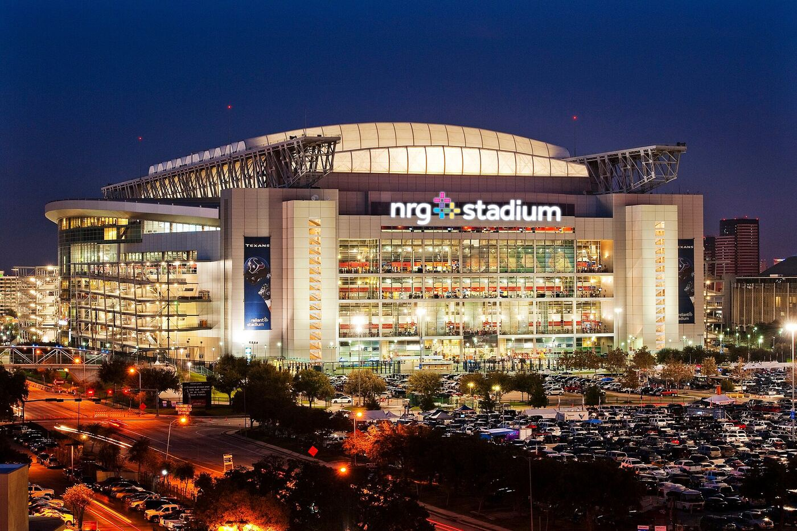

Anteprima · NFL · Week 11
Texans e Colts, due stagioni da raddrizzare e una rivincita in sospeso
Indianapolis Colts @ Houston Texans · 20/11/2026, ore 02:15 italiane · NRG Stadium
Nella notte tra giovedì e venerdì 20 novembre, alle 2:15 italiane, il NRG Stadium di Houston ospita una sfida di division tra due squadre che non stanno vivendo la stagione che speravano. I Texans (3-6) sono secondi nella AFC South, i Colts (3-7) terzi, entrambi alle spalle dei Jacksonville Jaguars.
Indianapolis arriva nel momento peggiore. Dopo una partenza tutto sommato in equilibrio, ha vinto una sola delle ultime cinque partite, e anche quel successo, contro i Miami Dolphins, è arrivato per due punti. Nel frattempo la squadra ha cominciato a smontarsi: in stagione sono partiti Josh Downs, oggi ai Kansas City Chiefs, DeForest Buckner e Keenan Allen, passati ai San Francisco 49ers, e Quenton Nelson, finito ai Seattle Seahawks. Il problema principale è la difesa, una delle più battute della lega: nelle ultime settimane ha concesso 42 punti ai Jaguars e 27 ai Dallas Cowboys. Daniel Jones è in netto calo rispetto all'anno scorso e ha lanciato più intercetti che touchdown, mentre Jonathan Taylor, che resta tra i migliori corridori della NFL, produce meno di un anno fa.
Houston ha la traiettoria opposta. I Texans, eliminati nel turno di division dei playoff la scorsa stagione, avevano cominciato con quattro sconfitte di fila; da lì hanno vinto tre delle ultime cinque, anche se nell'ultima partita sono caduti di tre punti a Cleveland. La ripresa passa da C.J. Stroud, in netta crescita rispetto all'anno scorso: è tra i quarterback più produttivi della lega e ha lanciato pochissimi intercetti. In stagione l'attacco si è rinforzato con Marvin Harrison Jr., arrivato dagli Arizona Cardinals, che però è stato escluso dal rapporto ufficiale per un problema al bicipite femorale. In difesa c'è Will Anderson Jr., il giocatore con più sack di tutta la NFL.
C'è poi un conto aperto. All'andata, a Indianapolis, i Colts vinsero 19-17, e i Texans hanno l'occasione di rifarsi davanti al proprio pubblico, anche se senza pezzi importanti. Il rapporto ufficiale esclude il defensive end Danielle Hunter e Woody Marks, il loro miglior corridore, fermo per una commozione cerebrale; Azeez Al-Shaair in settimana non si è allenato. Le assenze pesano anche sui Colts: saranno fuori il cornerback Charvarius Ward, il defensive tackle Jerry Tillery e i tackle Bernhard Raimann e Jalen Travis, mentre Sauce Gardner, l'altro cornerback, è da valutare. Con bilanci quasi identici, i bookmaker americani vedono comunque una sola favorita: i Texans, e nettamente.
Leggi su PureStats con meteo e numeri